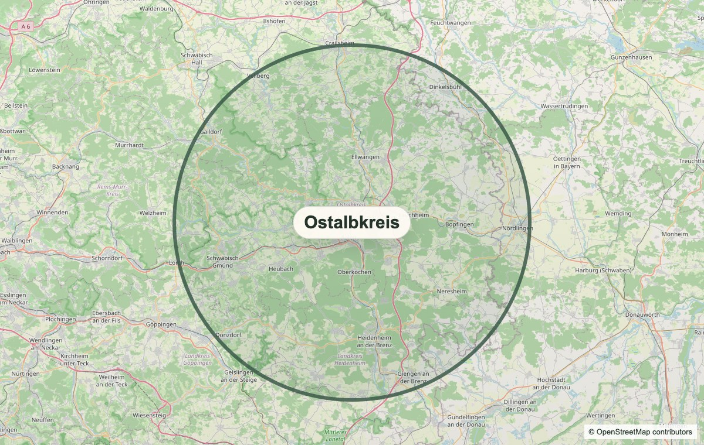

Neugeborene versorgen und beruhigen
Einfühlsame Betreuung, sichere Arme und ruhige Momente, damit Eltern kurz durchatmen können.
thefirstchapter.baby im Ostalbkreis
Die ersten Tage und Wochen sind der Anfang einer kleinen Lebensgeschichte. Robyn begleitet Familien mit liebevoller Babybetreuung, ruhiger Wochenbett-Unterstützung und Erfahrung aus ihrer Arbeit als Nanny.
Über Robyn
Robyn Iwanicki ist englische Muttersprachlerin, spricht fließend Deutsch und begleitet Familien mit einem warmen, praktischen Blick auf die erste Zeit mit Baby.
Ihre Erfahrung aus der Arbeit als Nanny hilft ihr, Babys ruhig zu versorgen, Eltern zu entlasten und kleine Alltagsroutinen so aufzubauen, dass sie zur Familie passen.
Zertifikate und genaue Qualifikationen werden hier ergänzt, sobald die finalen Bezeichnungen vorliegen.
Babybetreuung
Einfühlsame Betreuung, sichere Arme und ruhige Momente, damit Eltern kurz durchatmen können.
Praktische Hilfe rund um Mahlzeiten, Vorbereitung und die kleinen Abläufe, die den Tag leichter machen.
Unterstützung bei wiederkehrenden Babyaufgaben, damit neue Routinen sicherer und entspannter werden.
Ruhige Begleitung beim Ankommen, Trösten und Ablegen, immer passend zum Baby und zur Familie.
So funktioniert es
Die erste Anfrage läuft unkompliziert per WhatsApp auf Deutsch oder Englisch.
Robyn bespricht, welche Hilfe gerade gebraucht wird und wie die Situation zuhause aussieht.
Gemeinsam entsteht ein alltagstauglicher Plan für Babybetreuung, Entlastung und nächste Schritte.
Kosten und Krankenkasse
Die genauen Voraussetzungen hängen von Situation, Krankenkasse und ärztlicher oder hebammlicher Einschätzung ab. Diese Schritte dienen als Orientierung.

Region
Robyn begleitet Familien im Ostalbkreis. Gerade im Wochenbett zählt kurze, verlässliche Abstimmung, deshalb beginnt jede Anfrage mit einem einfachen WhatsApp-Kontakt und einer realistischen Einschätzung von Entfernung und Verfügbarkeit.
Stimmen von Familien
Die finalen Zitate werden ergänzt, sobald die Freigabe der Familien vorliegt. Die Einordnung bleibt bewusst transparent: Diese Stimmen beziehen sich auf Robyns frühere Nanny-Arbeit.
Zitat einer Familie wird hier nach Freigabe ergänzt.
Nanny-FamilieZitat einer weiteren Familie wird hier nach Freigabe ergänzt.
Nanny-FamilieKurze Erfahrung aus der Babybetreuung wird hier ergänzt.
Nanny-FamilieFAQ
Eine Mütterpflegerin entlastet Familien rund um Schwangerschaft, Wochenbett und besondere Belastungssituationen. Robyns Schwerpunkt liegt auf liebevoller Babybetreuung und praktischer Unterstützung zuhause.
Das kann je nach Situation möglich sein, zum Beispiel über Haushaltshilfe oder Familienpflege. Wichtig ist, die eigene Krankenkasse sowie Ärztin, Arzt oder Hebamme früh anzusprechen.
Am besten so früh wie möglich, sobald absehbar ist, dass zuhause Unterstützung gebraucht wird. Auch kurzfristige Anfragen können per WhatsApp besprochen werden.
Ja. Robyn ist englische Muttersprachlerin und spricht fließend Deutsch. Familien können in beiden Sprachen Kontakt aufnehmen.
Robyn begleitet Familien im Ostalbkreis. Die konkrete Entfernung, Verfügbarkeit und Terminplanung werden bei der Anfrage persönlich geklärt.
Nein. Eine Hebamme übernimmt medizinische und geburtsbezogene Betreuung. Mütterpflege ergänzt durch praktische Entlastung, Babybetreuung und Hilfe im Alltag.
Das kann je nach Situation und Verfügbarkeit besprochen werden. In der ersten Nachricht hilft eine kurze Beschreibung der Familiensituation.
Kontakt
Schreibe kurz, wann dein Baby kommt oder wie alt es ist, welche Unterstützung du brauchst und wo im Ostalbkreis du wohnst.